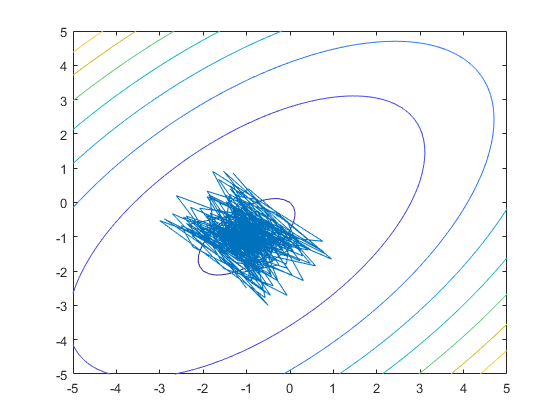
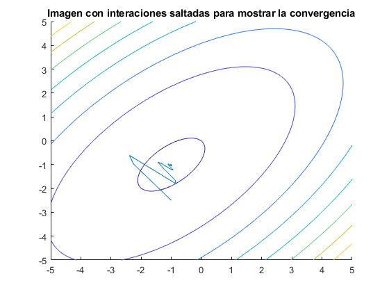

clc
clear
close all
syms x1 x2
x=[x1;x2];
x_t=[x1 x2];
A=[10 -6;-6 10];
d=[4;4];
F_x=(1/2)*x_t*[10 -6;-6 10]*x+d'*x;
fcontour(F_x)
grad=A*x+d;
x1=-1;
x2=-2.5;
X(1,1)=x1;
X(1,2)=x2;
g{1}=double(subs(grad));
gamma=0.991;
alpha=20;
provdeltax=gamma*[0;0]-(1-gamma)*alpha*g{1};
deltax(1,1)=provdeltax(1,1);
deltax(1,2)=provdeltax(2,1);
x_k=[X(1,1);X(1,2)];
x_t=provdeltax+x_k;
X(2,1)=x_t(1,1);
X(2,2)=x_t(2,1);
for i=2:2500
x1=X(i,1);
x2=X(i,2);
g{i}=double(subs(grad));
deltax_prov=[deltax(i-1,1);deltax(i-1,2)];
provdeltax=gamma*deltax_prov-(1-gamma)*alpha*g{i};
deltax(i,1)=provdeltax(1,1);
deltax(i,2)=provdeltax(2,1);
x_k=[X(i,1);X(i,2)];
x_t=provdeltax+x_k;
X(i+1,1)=x_t(1,1);
X(i+1,2)=x_t(2,1);
end
hold on
plot(X(:,1),X(:,2))
figure;
k=1;
for i=1:50:2500
X_p(k,1)=X(i,1);
X_p(k,2)=X(i,2);
k=k+1;
end
hold on;
fcontour(F_x)
title('Imagen con interaciones saltadas para mostrar la convergencia')
plot(X_p(:,1),X_p(:,2))
 